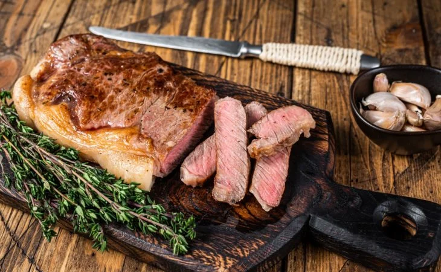

Ingredientes
1 kg de picanha
1 tablete de manteiga de leite
10 dentes de alho
1 colher de chá de pimenta calabresa
4 colheres de sopa de sal grosso
500 gramas macaxeira
Modo de Preparo
1.Disponha a carne em um refratário. Espalhe os dentes de alho na picanha inteira.
2.Tempere-a com sal grosso e adicione a manteiga sobre a carne e leve para assar a 200 °C por 30 minutos.
3.Passado o tempo, vire a picanha do outro lado, regando-a com mais manteiga e acrescente a macaxeira.
4.Vire a picanha por mais duas vezes até ela estar bem frita na manteiga.
5.Agora é só servir! Bom apetite.